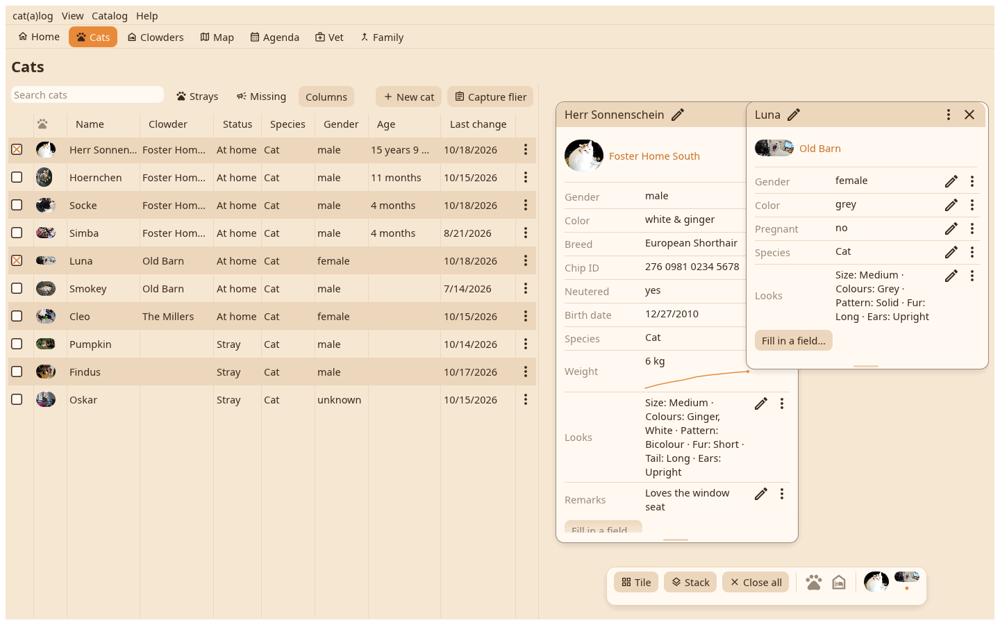

A cat or a home opens as its index card on the desk: several side by side, dragged into place and found there again, resized at the bottom edge.

A title bar with the name, the pen that renames, the × that closes and the ⋮ with the menu. Below, the face and the home, then only the fields that have a value; a number measured more than once draws its course under the value. The pen on a row opens the field's editor, the ⋮ on a row its history and actions. "Fill in a field…" adds a value.
While cards lie on the desk a dock floats at the bottom: Tile lays them in a grid that fits, Stack piles them in a cascade, Close all clears the desk. The faces in the dock are the cards; a click brings one to the front.
Edit opens the whole page, Timeline everything that happened, then the card as a document, the vet report, the missing poster, copy the card as an image, move to another home, seen here now, flier hangs here, show on map, merge into, hide, delete.